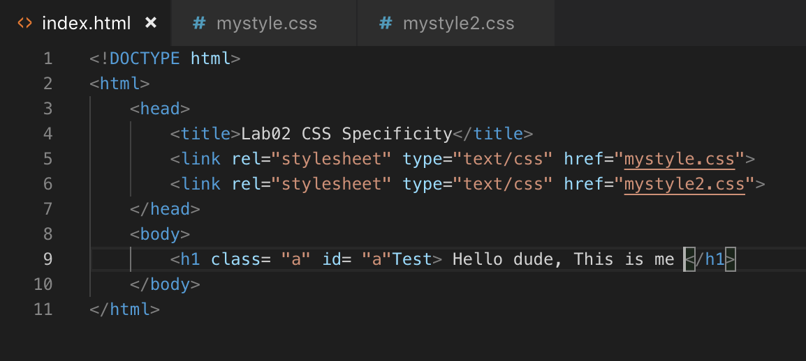
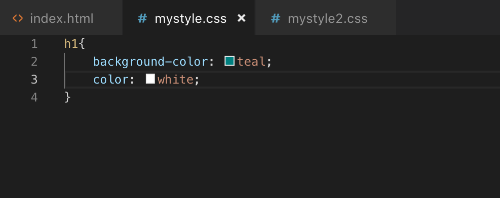
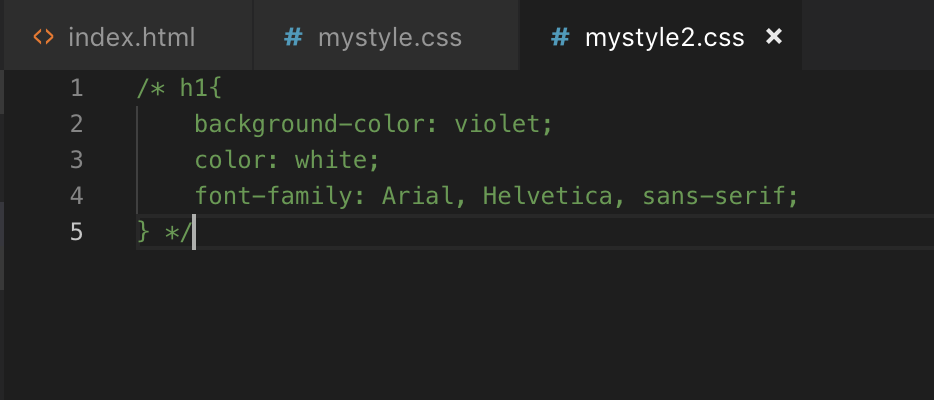
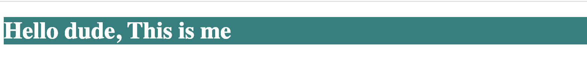
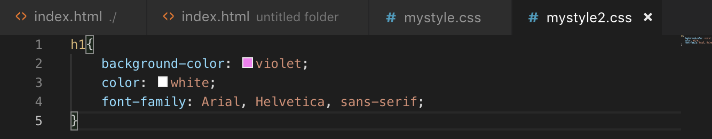
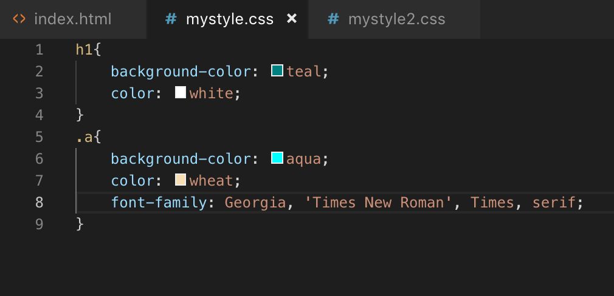
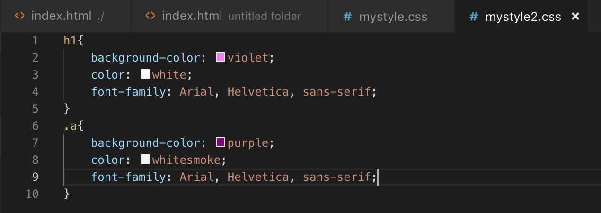
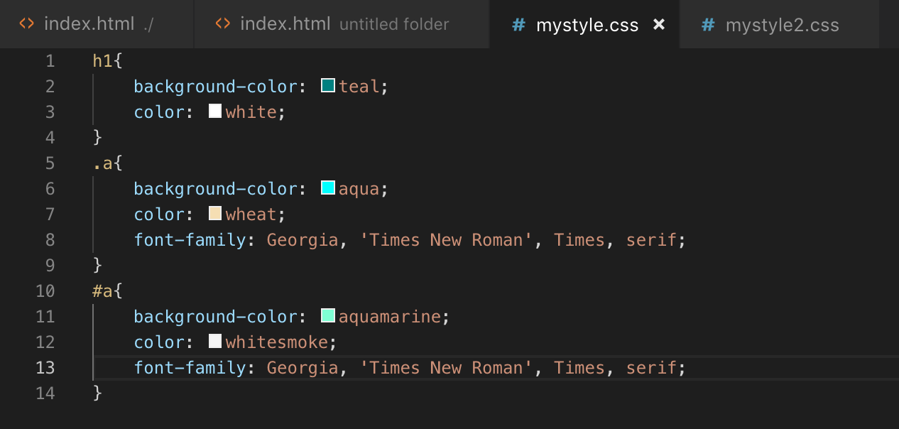
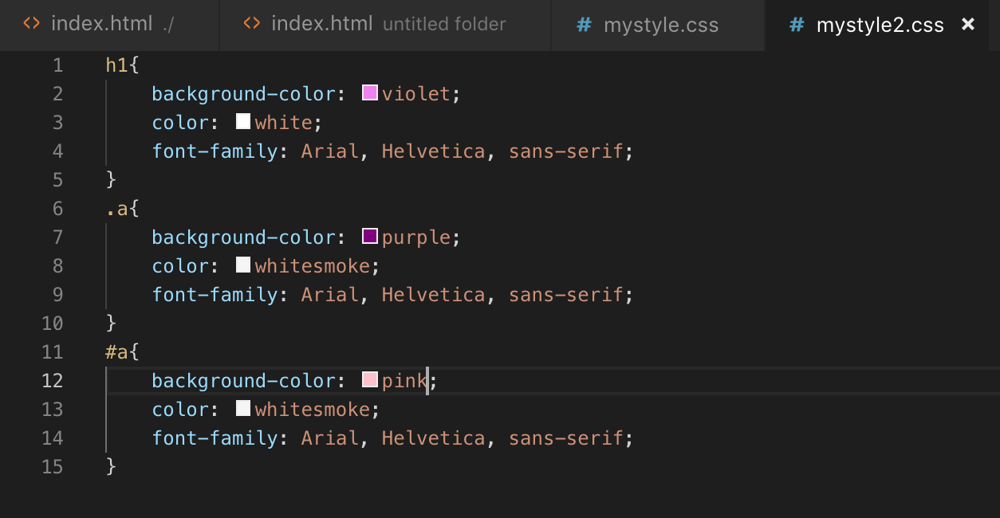

Lab02:CSS Specificity
จะสังเกตได้ว่า ในส่วนของ head section จะมีการเชื่อมโยง external link นั่นก็คือ ไฟล์ css mystyle.css และ mystyle2.css

โค้ดในส่วนของการใช้ Tag
โค้ด mystyle.css

โค้ด mystyle2.css

ผลลัพธ์

โค้ด mystyle2.css หลังจากมีการเรียกใช้

ผลลัพธ์หลังมีการเรียกใช้ mystyle2
"จะเห็นได้ว่าจากผลลัพธ์ index.html จะนำสีและฟ้อนท์ของ mystyle2.css มาใช้งาน
เพราะว่า selector ที่มีชื่อเดียวกันจะเลือก apply declaration ที่อยู่ข้างล่างสุด"
โค้ดในส่วนของการใช้ Class
โค้ด mystyle.css มีการเพิ่มโค้ดในการใช้งาน class เพิ่มขึ้นมา

ผลลัพธ์
"จะเห็นได้ว่าจากผลลัพธ์ index.html จะเปลี่ยนเป็นนำ mystyle.css มาใช้งาน
เพราะว่า จะเลือก class selector ก่อนที่จะเลือก tag"
โค้ด mystyle2.css มีการเพิ่มโค้ดในการใช้งาน class เพิ่มขึ้นมา

ผลลัพธ์หลังจากมีเพิ่มโค้ด mystyle 2
"จะเห็นได้ว่าจากผลลัพธ์ index.html จะนำสีและฟ้อนท์ของ mystyle2.css มาใช้งาน
เพราะว่า selector ที่มีชื่อเดียวกันจะเลือก apply declaration ที่อยู่ข้างล่างสุด"
โค้ดในส่วนของการใช้ ID
โค้ด mystyle.css มีการเพิ่มโค้ดในการใช้งาน ID เพิ่มขึ้นมา

ผลลัพธ์
"จะเห็นได้ว่าจากผลลัพธ์ index.html จะเปลี่ยนเป็นนำ mystyle.css มาใช้งาน
เพราะว่า จะเลือก ID selector ก่อนที่จะเลือก class,tag"
โค้ด mystyle2.css มีการเพิ่มโค้ดในการใช้งาน class เพิ่มขึ้นมา

ผลลัพธ์หลังจากมีการเพิ่มโค้ด mystyle2
"จะเห็นได้ว่าจากผลลัพธ์ index.html จะนำสีและฟ้อนท์ของ mystyle2.css มาใช้งาน
เพราะว่า selector ที่มีชื่อเดียวกันจะเลือก apply declaration ที่อยู่ข้างล่างสุด"